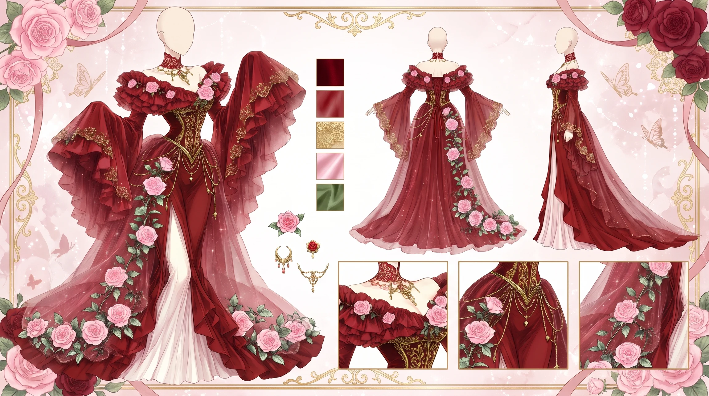
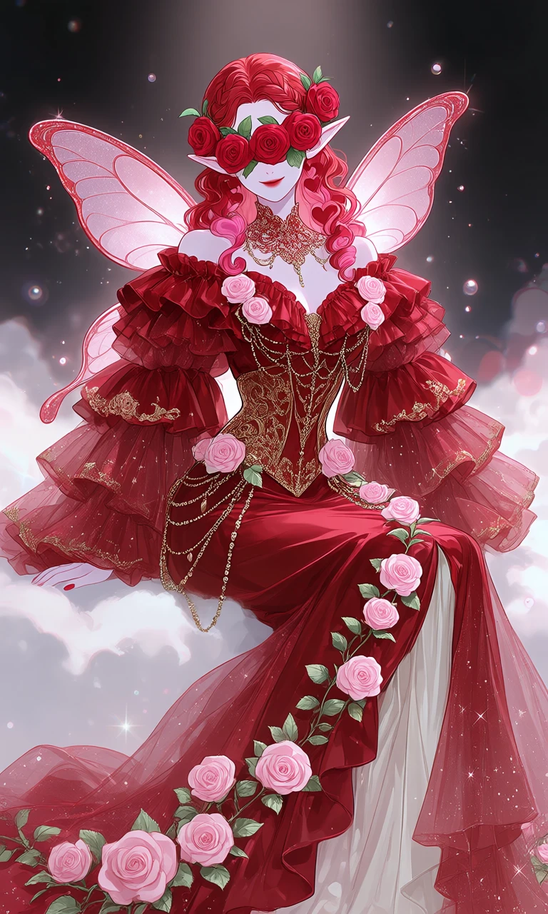
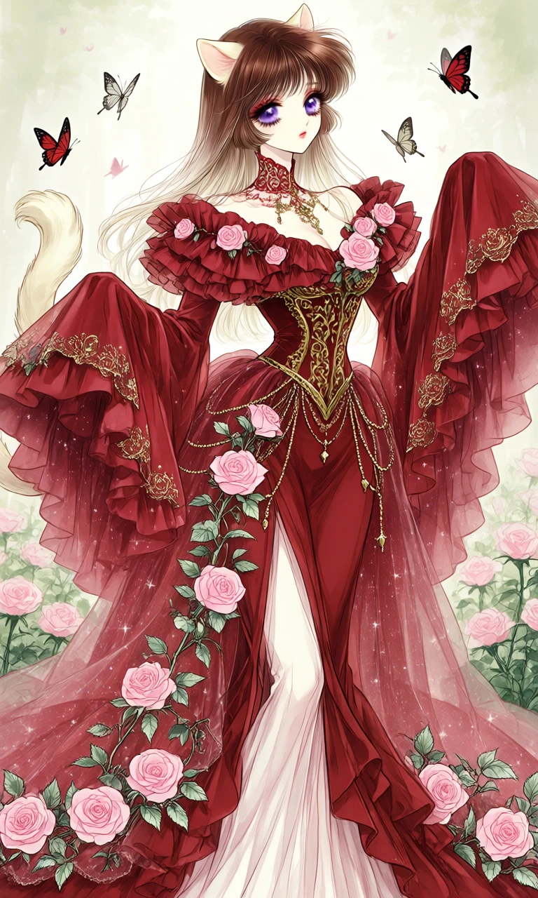

Roses in Rouge

Outfit Prompt
Outfit:
Silhouette: Fitted through the bodice to accentuate the figure, then exploding into a dramatic, multi-layered skirt with a long, sweeping train. It features a high front slit for added sensuality and mobility.
Color Palette:
Dominant rich, deep crimson red. Soft blush pink roses with sage green leaves. Metallic gold accents on the bodice and chains. Sheer red overlays with subtle star/sparkle patterns.
Neckline & Shoulders:
Ornate, high intricate collar with red and gold filigree patterns. Off-the-shoulder design with multiple tiers of ruffled red fabric framing the shoulders and upper chest. The neckline plunges slightly in the center with a decorative gold and chain detail.
Sleeves:
Extremely voluminous and eye-catching bell sleeves that flare dramatically outward. Multi-layered ruffles create a waterfall effect. Adorned with pink rose appliqués and delicate gold accents along the edges.
Bodice & Waist:
Fitted corset-style bodice with beautiful gold embroidery and scrollwork down the center. Multiple gold chain drapes with small pendants hanging across the torso, adding shimmer and movement. Cascading pink rose vines with green leaves trail diagonally across the bodice and down the skirt.
Skirt & Train:
Floor-length with a bold high central slit that reveals a white or light underlayer. The skirt features flowing layers and ruffles that create beautiful dimension. A long, majestic train spreads out at the back, heavily decorated with more rose vines along the hem. Sheer red tulle overlays on the sides of the train are dotted with tiny white stars, giving a magical, celestial touch.
Main fabric: Luxurious, silky red material that drapes and flows elegantly.
Overlays: Sheer tulle with star patterns for ethereal sparkle.
Embellishments: Three-dimensional pink fabric roses, metallic gold embroidery, dangling gold chains, and delicate beading.
Outfit Examples



